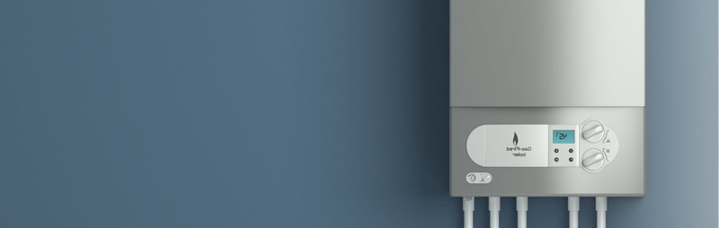
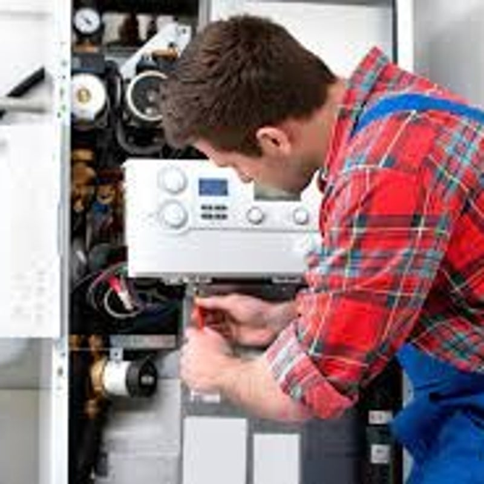
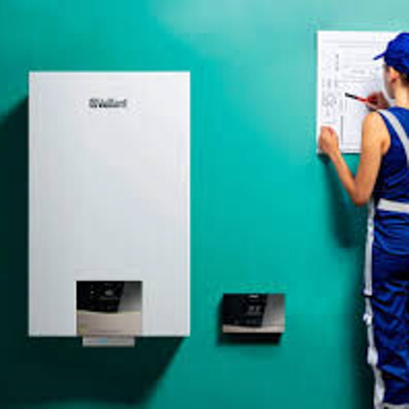
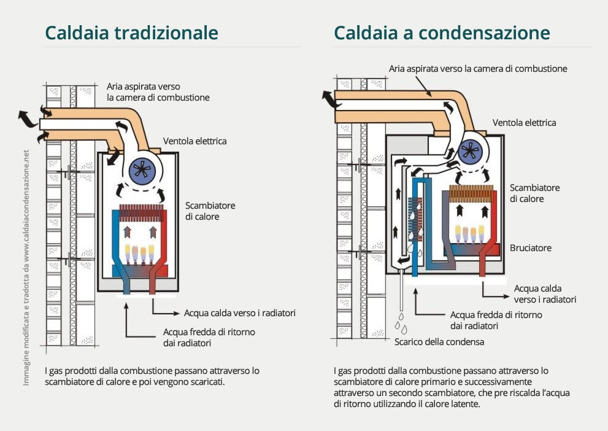
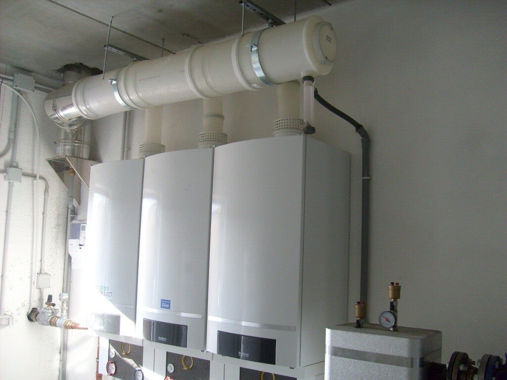
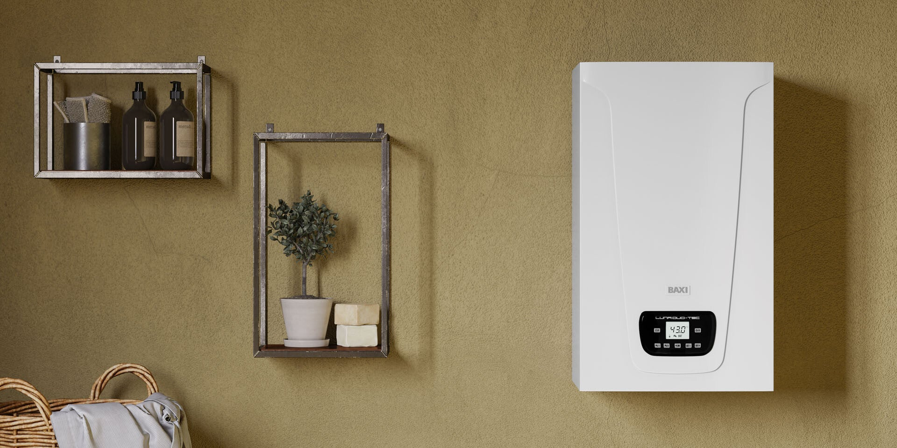
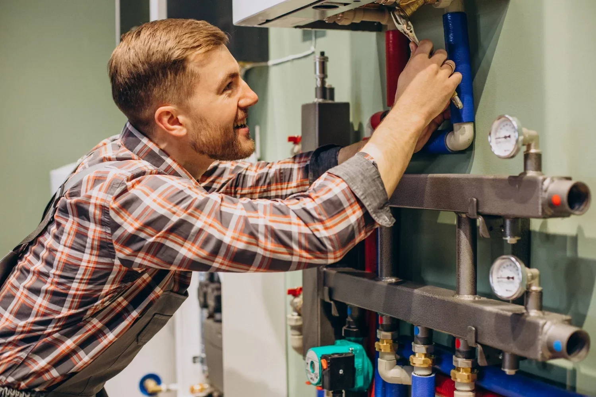
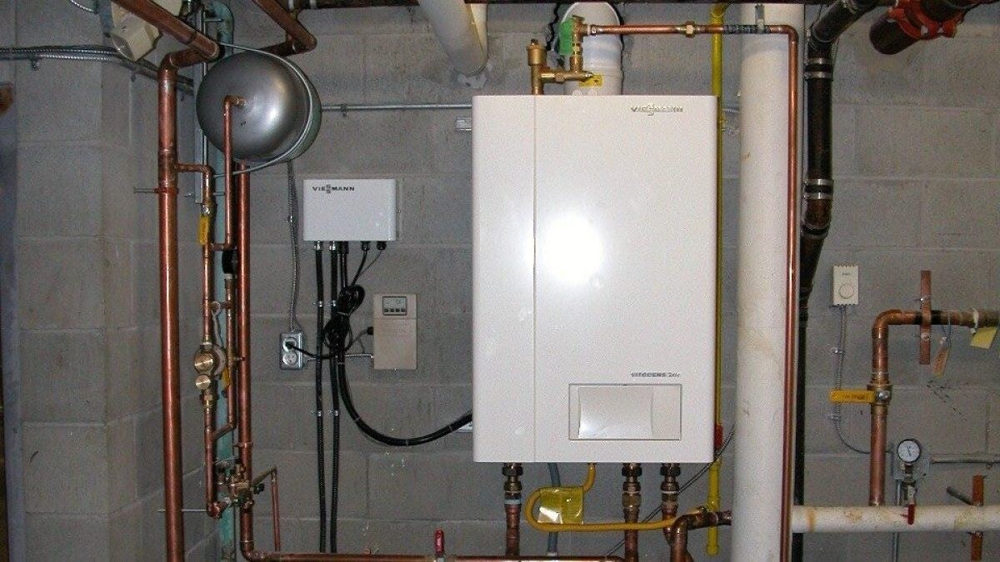
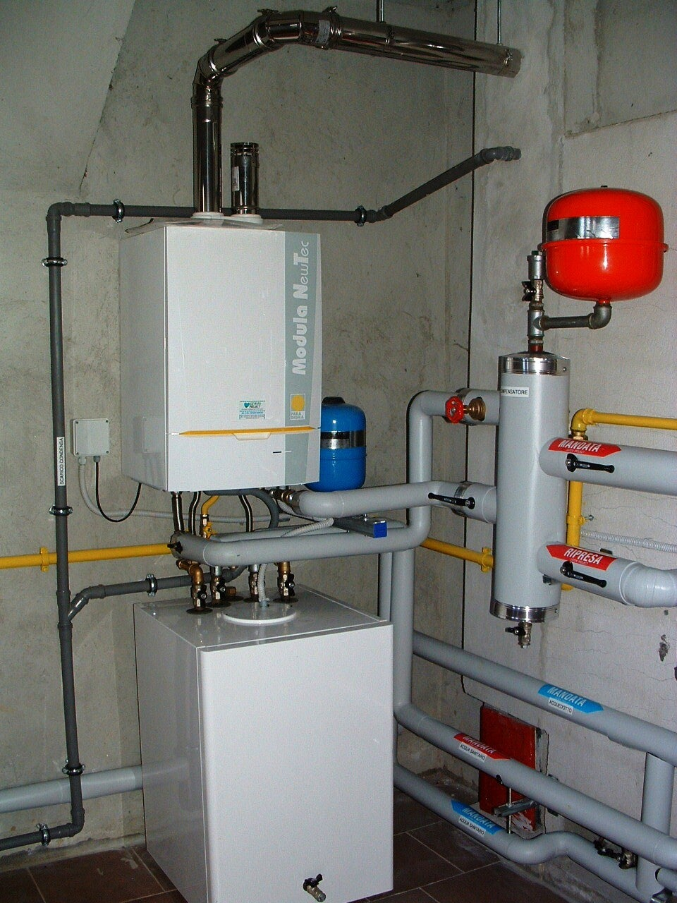

Differenze tra caldaie normali e a condensazione
Se state pensando di acquistare una caldaia a condensazione è importante sapere che la principale differenza rispetto a quelle tradizionali è una: non disperde il vapore acqueo originato dai fumi di combustione.
La caldaia a condensazione sfrutta un processo di combustione al suo interno come le caldaie tradizionali, ma rappresenta l'ultima frontiera tecnologica in tema di riscaldamento domestico.
La sua tecnologia consente di abbattere i consumi di gas e rendere piu leggera la bolletta, con un risparmio fino al 20% rispetto a una caldaia tradizionale di vecchia generazione.
Perche scegliere una caldaia a condensazione?
Efficienza: la caldaia a condensazione ha un rendimento maggiore perche, a differenza di quella convenzionale, riesce a sfruttare tutta l'energia del gas utilizzando anche il calore che nelle vecchie caldaie si disperde nei fumi.
Risparmio: garantisce un risparmio economico reale e duraturo. I consumi diminuiscono dal 15 al 35% annuo se la temperatura dell'acqua nell'impianto di riscaldamento viene impostata tra 60 e 80 gradi. Con impianti a basse temperature, tra 30 e 50 gradi, come gli impianti a pavimento, si puo arrivare fino al 35%.
Detrazioni fiscali: acquistando una caldaia a condensazione è possibile usufruire di due tipologie di detrazioni fiscali: 65% se abbinata a una pompa di calore in un sistema ibrido, altrimenti 50%. Le percentuali e le scadenze fiscali vanno sempre verificate al momento dell'acquisto.



Modelli e soluzioni
La scelta della caldaia dipende dall'impianto esistente, dagli spazi disponibili, dal fabbisogno di acqua calda e dal tipo di rendimento richiesto.





